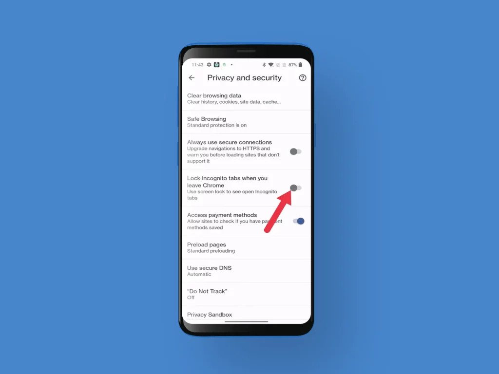

Google Chrome for Android now has the ability to lock the Incognito tabs you're viewing and unlock them through biometric authentication. This seems very useful, especially for situations where your phone is with someone else.
This works when you browse through Incognito mode and exit tabs. So, after you exit an Incognito tab, when you open it again, a gray screen will appear with the option “Unlock Incognito”. To tap on this, fingerprint unlocking or PIN is required and if your unlocking is successful, you will be able to access the tab. There is also an additional option to view other tabs. This capability is already available in iOSAnd given to Google Chrome.
How to Lock Incognito Tabs in Chrome?
Before you get started, you should know that this handy Chrome feature is not widely available for Android users and if you want it, enter the name of the flag in the search bar of the Chrome app on your Android phone and type “chrome://flags/ #incognito-reauthentication-for-android” Chrome flag has to be enabled. After enabling the flag, relaunch the Google Chrome app and follow these steps.
01. Select the hamburger menu in Google Chrome.

02. Select the Settings option.

03. Now, go to Privacy and Security option.

04. Then enable the “Lock Incognito tabs when you leave Chrome” option.

05. Once done, verify that it is enabled using your fingerprint or PIN.
The company hopes to provide this new Google Chrome feature to more people soon, and if you try it, let us know your experience with the new Chrome feature by commenting below.